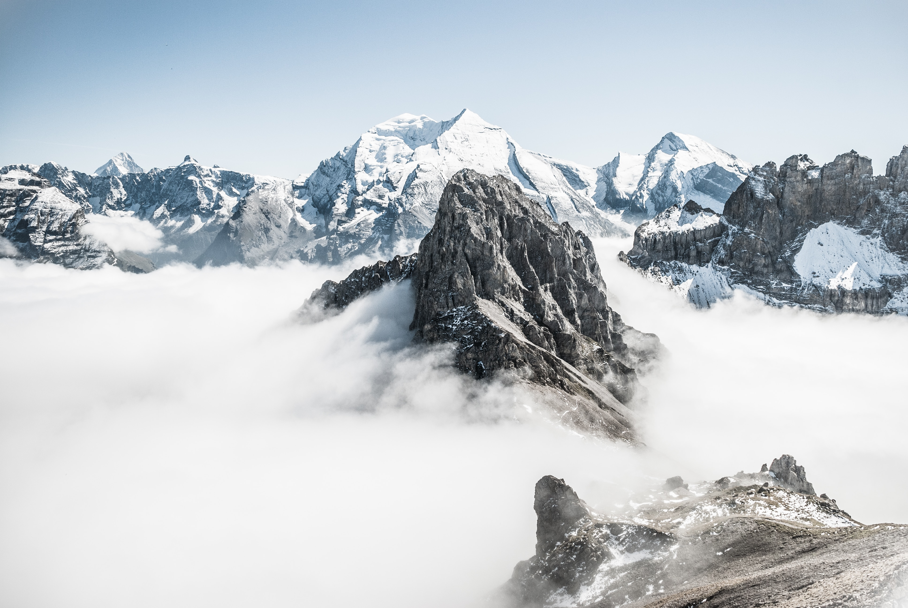

Upcoming Events

Everest Camp Trek
They call it the “steps to heaven” for a good reason. To go to the base camp of the highest mountain in the world is on every mountain lover’s bucket list.
Leran More
klasubai Camp Trek
Are you up for a thrilling adventure pushing you to your limits? The Kalsubai Trek is an excellent choice for anyone looking to challenge themselves while taking in breathtaking views of Maharashtra’s rugged landscape.
Leran More